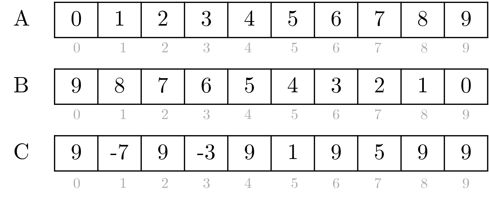

- Programming …
Lab 1
Professor: Joel Fuentes
Assistants: Daniel López, Sebastián González
Description
In this lab you will implement a DPC++ program that contains one or more kernels that perform operations on vectors. The goal is for vector operations to be run in parallel on an accelerator (multi-core CPU, GPU, or FPGA).
Consider that there are 3 vectors A,B and C. The operations to be carried out in parallel on these vectors are:
-
Assign incremental consecutive values to vector A.
-
Assign decremental consecutive values to vector B.
-
Perform arithmetic operations between A and B by saving the result in C. If the index of the vectors is even you must perform addition, if the index is odd you must perform subtraction.
Figure 1 shows an example of vectors A, B and C after performing operations described above.
For example, the operation on index 0 corresponds to the sum C[0] = A[0] + B[0] resulting in 9. The operation in index 1 corresponds to the subtraction C[1] = A[1] - B[1] resulting in -7.
For kernel implementation, the use of buffers, accessors, and parallel_for is recommended. In the following link will find a Wiki with details about its use in DPC++: http://www.face.ubiobio.cl/~jfuentes/classes/hc/unit2/dpcpp

To test your deployment, we recommend running it on Devcloud servers. In the following link you will find a Wiki with details about the the Devcloud environment configuration and compilation with DPC++: http://www.face.ubiobio.cl/~jfuentes/classes/hc/unit2/devcloud/
Solution:
/*********************************
* Lab 1 - Heterogeneous Computing
* Spring 2021
**********************************/
#include <CL/sycl.hpp>
constexpr int N = 20;
using namespace sycl;
int main(){
// Queue for device execution
queue q;
std::cout << "Device : "
<< q.get_device().get_info<info::device::name>()
<< std::endl;
// buffer declarations
std::vector<int> A(N);
std::vector<int> B(N);
std::vector<int> C(N);
buffer buffA(A);
buffer buffB(B);
buffer buffC(C);
// kernel submission to hardware device
q.submit([&](handler& h){
// Add your code here
accessor a(buffA, h, read_write);
accessor b(buffB, h, read_write);
accessor c(buffC, h, write_only);
h.parallel_for(N,[=](auto i) {
a[i] = i;
b[i] = N - i;
if (i%2 == 0)
c[i] = a[i] + b[i];
else
c[i] = a[i] - b[i];
});
}).wait();
std::cout << "A: ";
for (int i=0; i<N; i++)
std::cout << A[i] << " ";
std::cout << std::endl;
std::cout << "B: ";
for (int i=0; i<N; i++)
std::cout << B[i] << " ";
std::cout << std::endl;
std::cout << "C: ";
for (int i=0; i<N; i++)
std::cout << C[i] << " ";
std::cout << std::endl;
return 0;
}